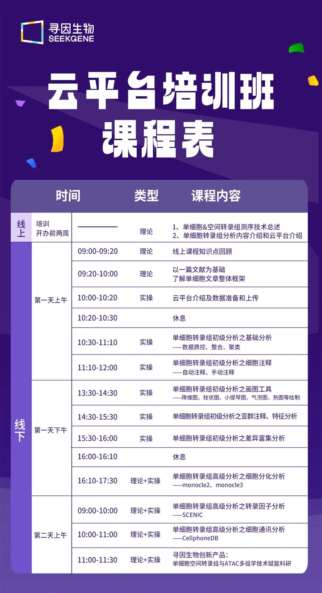
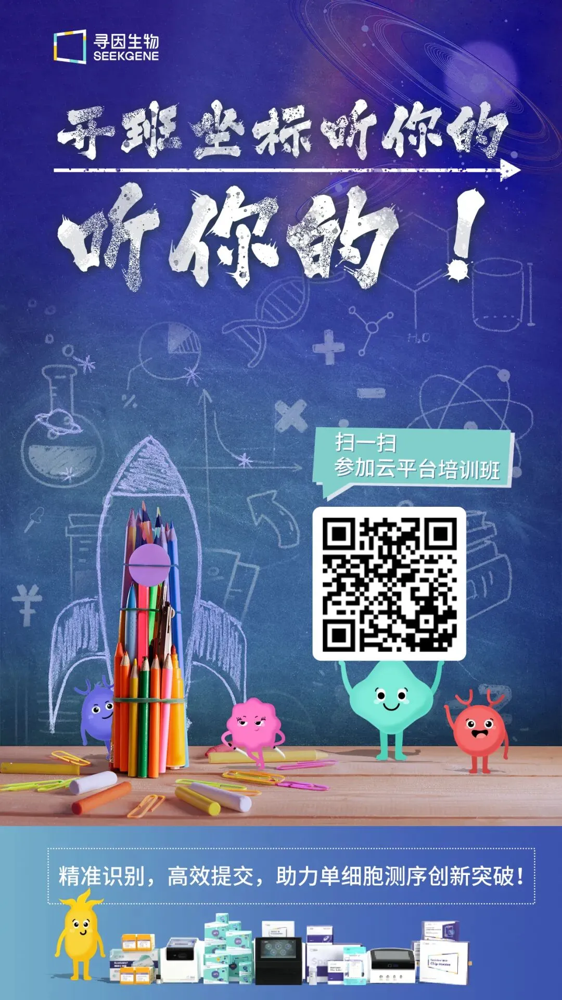
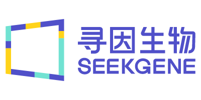

名额有限｜2025 SeekSoul Online云平台，小白也能 “玩转” 单细胞
原文：https://mp.weixin.qq.com/s?__biz=MzAwMzIzOTk5OQ==&mid=2247528115&idx=1&sn=e94ac82d7bc00a918bfcbd89562c3ca2&chksm=9b3c17e3ac4b9ef59f1975932f8bf56340bc02f49f5c0ff6cf5a7f729859d12eff132c2a6360#rd 合集：单细胞云平台
自 2024 年起，SeekSoul Online 云平台培训班已在南京、合肥、广州、郑州、长春等城市留下足迹。在科研道路上，我们始终坚守初心，稳步前行，全力回馈全国各地的科研工作者。截至目前，已深度且高质量地助力超过1000 个课题组，见证众多科研项目蓬勃发展、硕果累累。2025 年，SeekSoul Online 云平台课程将迎来全面升级，持续为科研发展添砖加瓦。
2025 年 全面升级再出发
2025年云平台数据亮眼
1. 2025年1-2月，寻因云平台在线使用用户量达 700+ 人。
2. 细胞注释点击操作 45000+ 次。
3. 用户画图 30000+ 副。
4. 高级分析操作 2500+ 次（远超寻因内部人员操作的 700+ 次）。
2025年云平台重大升级
基于对客户操作体验和实际需求的密切关注，寻因单细胞云平台迎来重大升级，singleR+AI注释，高级分析新增：Augur，banksy，hdWGCNA，stlearn。进一步提升数据分析的效率和准确性，为科研工作者提供更强大的支持。
2025提供免费学习机会
SeekSoul Online 云平台培训班持续走向全国，哪里有需求，我们就去哪里。首场培训将于3月22日 - 3月23日 在武汉 以线上 + 线下小班形式 授课进行，本次培训课程继续完全免费 ！只要你来学习，就可以免费学分析！往期学员课后即可独立复现《NC》：优秀文章复现案例展示
课程报名与安排
课程安排

** **报名方式
扫码添加程经理报名，开启科研学习
注意事项
注意事项：报名仅限30 名，学员需自己携带笔记本电脑 参加课程哦～我们包午饭 ，不用担心饿肚子学习～
▼
此外，4月份北京站及福州站 已同步启动。如果您在别的城市想要体验培训班，不用担心，速速扫码填写您的相关信息，下一次城市可能就是你所在的呢。

小寻盼：您的转发、点赞、在看与喜欢
关于寻因生物

北京寻因生物科技有限公司（简称寻因生物）——专注单细胞测序技术自研、创新的国产技术平台。秉承“用技术温暖生命，预见未来”的企业愿景，致力成为您身边最值得信赖的单细胞创新合作伙伴。
寻因生物于2018年启动研发，历时6年，已完成覆盖单细胞仪器、实验、建库、分析全链条自研产品20 余项，提供单细胞科研全周期服务&特殊样本解决方案50 余种。
专注单细胞表达谱功能的单细胞3’转录组 产品及助力免疫方向研究的单细胞免疫组 产品，已实现与国际性能比肩。继而创新推出了真·单细胞分辨率的单细胞空间转录组； 实现突变、可变剪切、lnc等更多信息更多物种信息检出的单细胞全序列转录组 以及实现FFPE样本更长RNA覆盖的单细胞FFPE转录组 等创新技术，从而覆盖肿瘤、免疫、感染、疾病发生发展和发育分化等研究方向。
2023年，寻因生物作为牵头单位的“十四五”国家重点研发计划“前沿生物技术”重点专项成功立项。北京市多次颁发授予寻因生物专精特新中小企业、高新技术企业证书、中关村高新技术企业等荣誉认证。
寻因生物致力于单细胞技术普适化标准和应用，积极建立全球化视野，现已与中国大陆、中国香港、澳大利亚、德国、荷兰、法国、西班牙、俄罗斯等全球十余个国家地区，1000+ 研究单位建立合作。
完成100+ 单细胞全体系知识产权布局，22 项自主知识产品体系搭建，9项产品获得了欧盟数据EUDAMED注册认证。技术平台获得涵盖医疗器械、质量、环境安全、职业健康和信息安全的五项管理体系认证。
寻因生物，通过不懈努力将管理体系达到国际标准，持续深耕创新，有能力不断提供稳定、高标准的产品和服务，为生命科学工作者提供更优科研工具，助力项目开花结果。
END